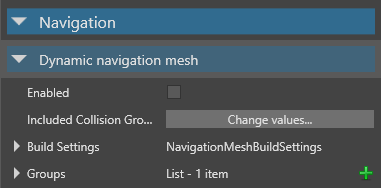
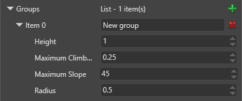

ナビゲーション グループ
初級 レベル デザイナー プログラマー
ナビゲーション グループは、ナビゲーション グループに追加されたエンティティのさまざまなプロパティを定義します。ナビゲーション グループはプロジェクトの Game Settings で定義します。
異なる種類のエンティティに対して異なるナビゲーション グループを作成できます。たとえば、ゲームにスクリプトで制御される乗り物がある場合、異なるサイズの乗り物に対して異なるナビゲーション グループを作成し、それぞれに異なるプロパティを設定できます (自動車グループ、バス グループ、バイク グループなど)。
ナビゲーション グループを作成する
［Solution explorer］(既定では左下のペイン) で、［Assets］フォルダーを選択します。

［Asset view］(既定では下部のペイン) で、［Game Settings］アセットを選択します。

［Property grid］(既定では右側のペイン) で、［Navigation Settings］を展開します。

［Groups］の隣の
 (［Add a new item to the list］) をクリックします。
(［Add a new item to the list］) をクリックします。新しい項目がナビゲーション グループのリストに追加されます。

ナビゲーション グループのプロパティを設定します。このグループに追加したエンティティはこれらのプロパティを使用します。
ナビゲーション グループのプロパティ
通常、ナビゲーション グループのプロパティは、グループ内のエンティティのキャラクター コンポーネントのプロパティとほぼ一致している必要があります (ある場合)。
| プロパティ | 説明 |
|---|---|
| Item | グループの名前です。 |
| Height | このグループ内のエンティティの高さです。エンティティは、天井がこの値より低いエリアには入ることができません。 |
| Maximum climb height | このグループのエンティティが登ることのできる最大の高さです。 |
| Maximum slope | このグループのエンティティが登ることのできる最大の斜度 (度単位) です。エンティティは、この値より急なスロープを登り降りできません。通常、この値は、グループ内のエンティティのキャラクター コンポーネントの［Maximum Slope］プロパティとほぼ同じ値である必要があります (ある場合)。 |
| Radius | この値が大きいほど、エンティティが使用するナビゲーション メッシュの面積が大きくなります。エンティティは Radius の 2 倍より小さいギャップを通り抜けることはできません。 |